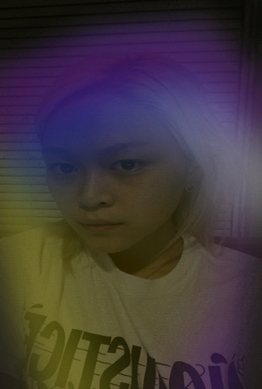
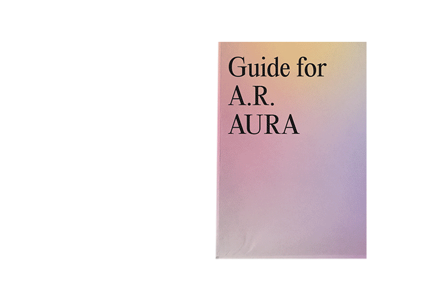

A.R. AURA (pronounced “aurora”) is an Instagram and Facebook face filter that uses augmented reality to read your aura. Your aura is described as the energy that surrounds your physical body and spirit. A.R. Aura simulates reading your electromagnetic field from your phone. To read your aura, you must refer to the A.R. AURA Guide. A.R. AURA is a product that is inspired by aura photography. The face filter was created using Spark AR Studio.
↑ Final presentation of guide, front

↑ Expanded A.R. Aura guide, step-by-step instructions on how to use A.R.Aura face filter

↑ Back of expanded guide, showing how to interpret your aura. Can be used as poster.

↑ Using A.R. Aura filter
↑ Instagram for A.R. Aura, @A.R.Aura